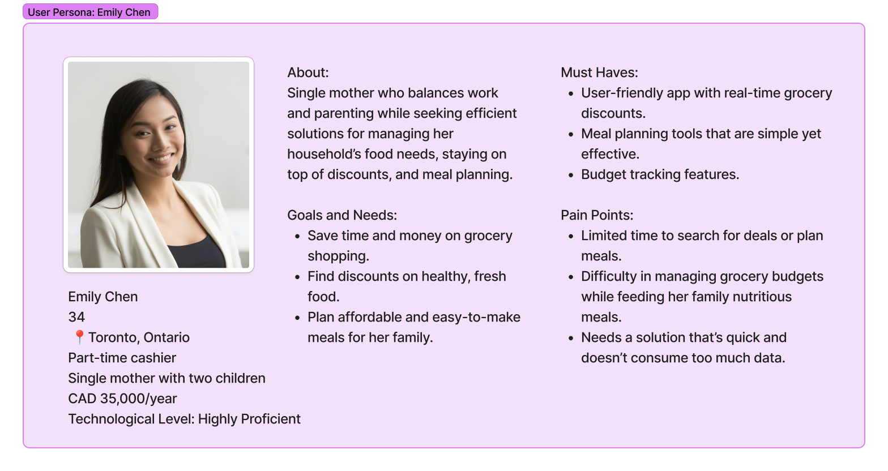
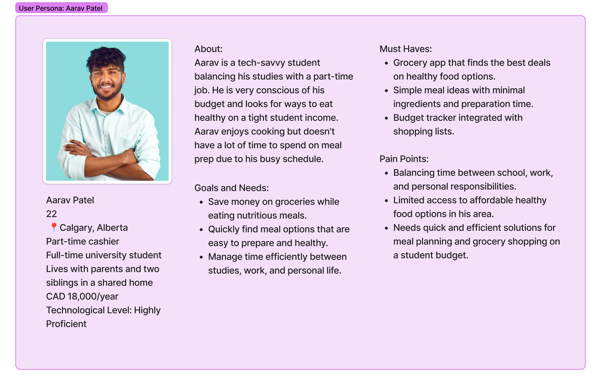
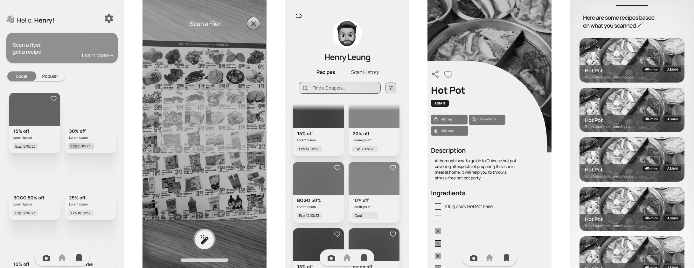
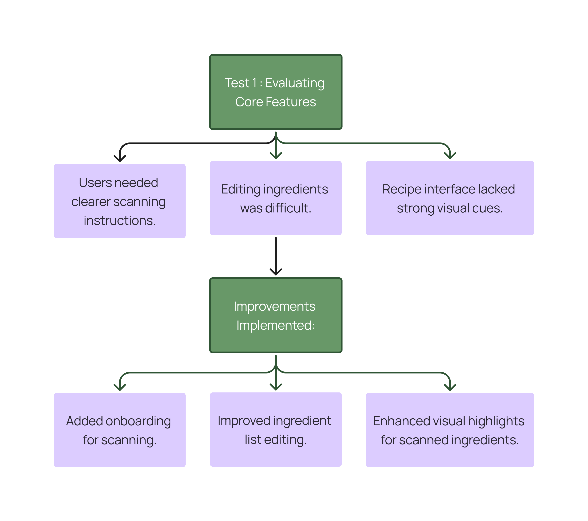

I led user research to create an easy-to-use experience for grocery flyer browsing, meal planning, and budget-friendly shopping. My role involved understanding user needs, identifying challenges with meal access, and improving app features to help families facing food insecurity cook affordable, nutritious meals.
To tackle food insecurity, we developed WhatSupper, a mobile app that helps low-income families find affordable, nutritious meals using discounted grocery flyers. The app simplifies meal planning, helping families make informed, budget-friendly choices while reducing food waste and promoting healthier eating.
User personas were identified based on challenges related to food affordability, meal planning, and budgeting.
The designers created a clear site map to outline the app’s structure and user flow, ensuring an intuitive and simple experience.

Based on the site map, they developed low-fidelity wireframes in Figma, focusing on efficient information delivery and ease of use.
The designers established a style guide using Manrope font and a green/yellow color palette to convey health and freshness. They also developed a design system for consistency and reusable components.
To ensure an intuitive and user-friendly experience, we conducted three rounds of usability testing over three weeks. Each session involved 4–6 participants and focused on refining the app’s functionality based on user interactions and feedback.
Objective: Assess the initial prototype, focusing on the flyer-scanning process, recipe generation, and navigation flow.
Findings:
Improvements Implemented:
Test 2: Enhancing Navigation & User Interaction
Objective: Measure ease of use, task completion efficiency, and accessibility of key features.
Findings:
Adjustments Made:
Objective: Confirm the effectiveness of previous improvements and evaluate overall user satisfaction.
Findings:
Not a Universal Solution
WhatSupper helps with meal planning but doesn’t solve the root causes of food insecurity, such as poverty, unemployment, and lack of access to housing or healthcare. It’s a tool to support individuals and families, but addressing systemic issues requires broader strategies at multiple levels.
Collaboration and Communication: